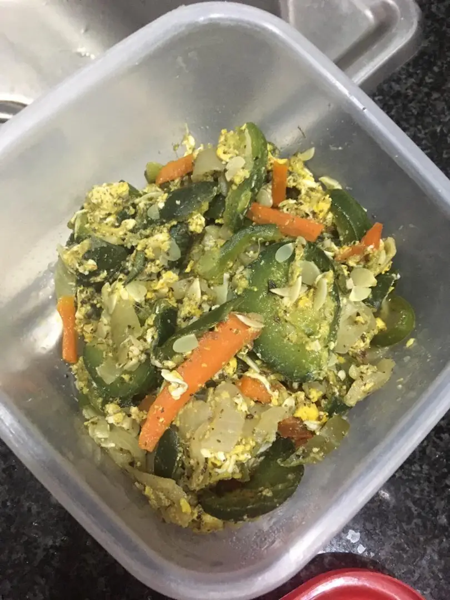

Pancitos de Zanahorias - Para el desayuno!
500 ml de agua tibia 10 g de levadura seca 120 g de avena 200 g de harina integral 100 g de zanahoria rallada 200 ml de yogur natural 500 g de harina de trigo 20 g de semillas (calabaza, girasol, sésamo, lino, etc). Preparación En un bol, colocar el agua, agregar la levadura y mezclar. Incorporar la avena, las harinas, la zanahoria rallada y el yogur. Mezclar bien. Completar con las semillas y dejar reposar en heladera por 1 hora. Con una cuchara, formar pancitos y colocarlos sobre una placa para horno. Hornear a fuego medio (200°) por 30 minutos aprox.
Entrada - Salteado Express!
Ingredientes (para 4 personas) 4 zuchinis medianos 2 cebollas medianas 250 g de champiñones Preparación Cortar los vegetales en juliana y saltearlos en una sartén con una cucharadita de aceite. ¡Se puede usar como una salsa agregando un poco de crema a la preparación! (si la crema es sin TACC, la receta es totalmente apta para celíacos)
FIDEOS CON BRÓCOLI Y SALSA BLANCA
Ingredientes 1 paquete de fideos (500 g) 1 planta de brócoli ½ litro de leche 3 cucharadas de harina queso rallado sal, pimienta, nuez moscada Preparación Estirar Para la salsa blanca: Mezclar la leche con la harina y revolver bien. Condimentar a gusto. Llevar a fuego lento, revolviendo siempre y hasta dos minutos después de que hierva. Reservar. Cortar los brócolis y hervirlos. Aparte, cocinar los fideos en abundante agua y colarlos. En una fuente para horno colocar los fideos y los brócolis y cubrir con la salsa blanca. Agregar queso rallado. Llevar a horno por unos 15 minutos hasta que la superficie esté dorada. Opcional: Se pueden usar otras verduras como espinaca, zapallitos y reemplazar la salsa blanca por queso cremoso.